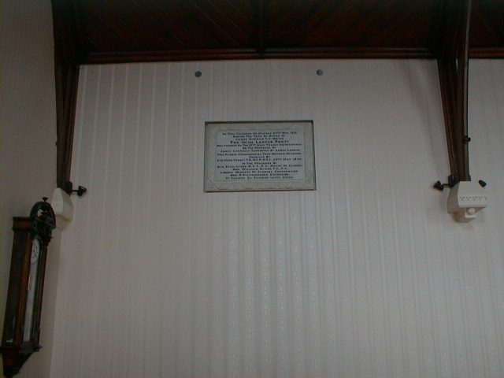

Intorduction
Introduction
Clonmel
"Meadow of Honey"
Clonmel is the biggest inland town in Ireland and has a lot of historical sites as you will find out in this web site.
A lot of the old builbings in clonmel are from the 17th century however there have been a few buildings that date back to as
early as the 12th century. Clonmel has increased in size over the last few years. A lot of the old building have been restored
as best they could such as The Main Guard. Clonmel has become a large tourists attraction they come from all over the world.
Clonmel is said to be a great place to shoping with stores such as Now Trading Boutique, Fashions, Divas,woodies, Allens and many other great stores.
Clonmel has Expanded alot and will expand a lot more over the next few years. In this next few pages we look at historical sites in Clonmel.

© 2004 history Of Clonmel